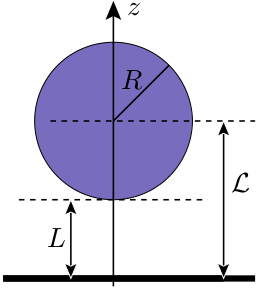

Summary
We first want to give a brief summary of the Casimir effect and libcasimir.
The Casimir effect
In 1984 Hendrik Casimir considered two parallel, perfectly conducting plates in vacuum at temperature and predicted an attracting force [1]. This force arises due to vacuum fluctuations and was experimentally verified in 1956 by Derjaguin, Abrikosova and Lifshitz [2], as well as in 1958 by Sparnaay [3].
Since the Casimir effect is a manifestation of vacuum fluctuations in the mesoscopic world, it has relations to many open physical questions. As the Casimir force is the dominant force between electically neutral bodies at micron or sub-micron distances, the Casimir effect plays an important role in the search for new hypothetical forces predicted by unified theories [4]. The Casimir effect is also linked to the theory geometry and the puzzle of the cosmological constant. All energy gravitates and thus zero point fluctuations are expected to contribute to the stress–energy tensor in Einstein's field equations [5]. In fact, several cosmological observations like the discovery that the universe expands in an increasing rate [6] suggest a non-zero energy density of vacuum. However, estimations of the cosmological constant and meassurements disagree by about 120 orders of magnitude.
Moreover, negative entropies are found for some geometries and parameters in the Casimir effect. Negative entropies, for example, occur in the plane–plane geometry for metals described by the Drude model. In addition, this effect also occurs in the plane–sphere geometry even for perfect reflectors, thus suggesting a geometrical origin of negative entropies [7,8]. This is in general not a problem, since the Casimir free energy is an interaction energy and does not describe the entire physical system. However, the origin of negative entropies is not understood very well.
What is libcasimir?
 libcasimir implements the numerics for the Casimir effect in the plane-sphere geometry with perfect spheres using a scattering approach [8, 9]. We use the same approach, but derive slightly different formulas for the matrix element of the round-trip operator that don't need Wigned-d-symbols.
A sphere of radius is separated by a distance of from a plane. The plane is infinite in the -direction and both plane and sphere are assumed to be perfect reflectors. The programs calculate the free energy in scaled quantities: Using this scaling the free energy only depends on the temperature and the geometric ratio .
This code is part of my master thesis. This thesis is also a good reference for libcasimir. It costed much time and much work to write a stable and a fast implementation. So, if you find this piece of code useful and you use it for plots, please consider to cite libcasimir.
libcasimir
Features
- Calculate the free energy for different separations and temperatures
- Calculate the free energy in the high temperature limit
- Support for 80-bit extended floating point precision and quadrupole precision
- libcasimir is fast and reliable
- ready to use programs: you don't have to modify the code
- libcasimir is free software – you may use it or even modify it
Installation
If you use Linux or Unix, you need the gcc and development libraries and header files for the standard C library. On a Debian-like Linux the commands
$ sudo apt-get install gcc libc6-dev make
$ cd src/
$ make
should install all dependencies and compile the code. If you want to change the floating point precision (80-bit extended precision or quadrupole precision) or the compiling option, have a look at the Makefile.
Usage
If you want to calculate the free energy , you can use the program casimir. Mandatory options are -T for temperature and -x for the aspect ratio .
Example: Calculate
$ ./casimir -T 1 -x 0.5
# ./casimir, -T, 1, -x, 0.5
# precision=1e-10
# lfac=5
# cores=1
# LbyR=0.5
# T=1
# extrapolate=no
#
# LbyR, T, F, lmax, nmax, time
0.5, 1, -0.160753879276811, 10, 35, 0.149511
# 100.00%, L/R=0.5, T=1
- LbyR– aspect ratio
- T – temperature
- F – free energy
- lmax – number of multipole moments used to calculate the free energy
- nmax – last term calculated of Matsubara sum
- time – time needed to calculate free energy
There are more programs available. Every program outputs a description and a usage text when called with the flag -h.
Developing
Feel free to modify and expand libcasimir! A documentation generated by Doxygen is available.
Citing
You may cite this software, see: http://dx.doi.org/10.5281/zenodo.12476
Bibtex:
@article{Hartmann:12476,
author = "Michael Hartmann and Ingold, Gert-Ludwig",
title = "{Casimir: libcasimir 0.1}",
month = "Oct",
year = "2014",
doi = "{10.5281/zenodo.12476}",
url = "{http://dx.doi.org/10.5281/zenodo.12476}",
}
Authors and License
libcasimir is developed by Michael Hartmann. It is free software and licensed under GPLv2. This means that you may study, modify and distribute the original software and the adapted versions.
Thanks
I want to thank Gert-Ludwig Ingold for the excellent supervision during the time of my master thesis.
Publications related to libcasimir
- Hartmann, "Negative Casimir entropies in the plane–sphere geometry", master thesis, 2014
libcasimir was orignally developed for this master thesis.
- Ingold et al, Geometric origin of negative Casimir entropies: A scattering-channel analysis, arxiv-preprint, 2014
Fig. 2 and Fig. 3 were created using libcasimir.
Bibliography
- Casimir, "On the attraction between two perfectly conducting plates", Indag.Math. 10, 1984
- Derjaguin, Abrikosova, Lifshits, "Direct meassurement of molecular attraction between solids separated by a narrow gap", Q. Rev. Chem. Soc. 10, 1956
- Sparnaay, "Meassurements of attractive forces between flat plates", Physica 24, 1958
- Onofrio, "Casimir forces and non-Newtonian gravitation", New Journal of Physics 8, 2006
- Jaffe, "The Casimir Effect and the Quantum Vacuum", Phys. Rev. D 72, 2005
- Riess et al., "Observational Evidence from Supernovae for an Accelerating Universe and a Cosmological Constant", The Astronomical Journal, Volume 116, Issue 3, 1998
- Milton et al., "Negative Casimir Entropies in Nanoparticle Interactions", arxiv preprint
- Canaguier-Durand et al., "Thermal Casimir effect for Drude metals in the plane-sphere geometry", Phys Rev A 82, 2010
- Hartmann, "Negative Casimir entropies in the plane–sphere geometry", master thesis, 2014